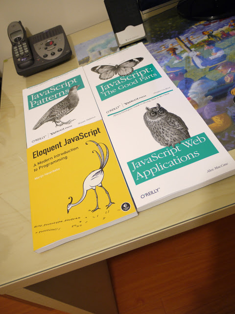

<!doctype html>
<html lang="ru" xmlns:fb="http://ogp.me/ns/fb#">
<head>
    <meta charset="UTF-8">
    <title>lazy load</title>
    <link rel="stylesheet" href="assets/styles/style.css">

    <script src="assets/js/script.js"></script>

</head>
<body>
    <script type="text/template" id="first_page">
        <ul class="menu">
            <li><a href="/#first" data-page="app__first">first</a></li>
            <li><a href="/#second" data-page="app__second">second</a></li>
            <li><a href="/#third" data-page="app__third">third</a></li>
            <li><a href="/#fourth" data-page="app__fourth">fourth</a></li>
            <li><a href="/#fifth" data-page="app__fifth">fifth</a></li>
        </ul>
        <div class="clear"></div>
        <h1>First page</h1>

        
        <p>
            Duis sed molestie magna. Phasellus risus neque, sagittis at velit ac, dictum vestibulum dui. Duis facilisis, ligula at ullamcorper lacinia, neque nunc auctor sem, eu cursus libero dui sit amet lacus. Duis sit amet lacus lorem. Quisque condimentum, eros sit amet sagittis rhoncus, ligula quam condimentum felis, ac feugiat nunc arcu a enim. Sed dignissim lacus id felis lobortis molestie. Nunc consequat semper mi, a ornare ante iaculis a. Ut quis nunc felis. Praesent iaculis porttitor est, id laoreet purus condimentum non. Interdum et malesuada fames ac ante ipsum primis in faucibus. Interdum et malesuada fames ac ante ipsum primis in faucibus. Integer ac libero fringilla orci ultrices vestibulum in ut magna. Etiam eu scelerisque ligula.
            <br/>
            <br/>
            Phasellus pulvinar fermentum ipsum. Sed eu commodo dolor. Donec interdum orci nec fringilla dapibus. Nam turpis mi, ornare at mi a, ornare maximus lorem. Nam non urna nunc. Pellentesque habitant morbi tristique senectus et netus et malesuada fames ac turpis egestas. Pellentesque dolor metus, tempor ut vehicula at, laoreet vitae purus. Morbi porta eu turpis eget maximus. Suspendisse ut sem interdum odio ullamcorper rhoncus laoreet a neque. Vivamus massa est, vulputate sit amet augue sed, consequat accumsan dui. Mauris interdum pretium neque a fringilla. Duis dui lacus, aliquam at vestibulum malesuada, laoreet quis justo. Curabitur elementum quam nibh, non efficitur libero porta malesuada. Duis malesuada elit quis lacus pretium, eu tristique eros placerat. Quisque tortor dolor, consectetur hendrerit enim a, luctus porttitor lorem. Integer pulvinar sem sed vestibulum faucibus.
        </p>
    </script>

    <script type="text/template" id="second_page">
        <h1>Second page</h1>

        

        <p>
            Duis sed molestie magna. Phasellus risus neque, sagittis at velit ac, dictum vestibulum dui. Duis facilisis, ligula at ullamcorper lacinia, neque nunc auctor sem, eu cursus libero dui sit amet lacus. Duis sit amet lacus lorem. Quisque condimentum, eros sit amet sagittis rhoncus, ligula quam condimentum felis, ac feugiat nunc arcu a enim. Sed dignissim lacus id felis lobortis molestie. Nunc consequat semper mi, a ornare ante iaculis a. Ut quis nunc felis. Praesent iaculis porttitor est, id laoreet purus condimentum non. Interdum et malesuada fames ac ante ipsum primis in faucibus. Interdum et malesuada fames ac ante ipsum primis in faucibus. Integer ac libero fringilla orci ultrices vestibulum in ut magna. Etiam eu scelerisque ligula.
            <br/>
            <br/>
            Phasellus pulvinar fermentum ipsum. Sed eu commodo dolor. Donec interdum orci nec fringilla dapibus. Nam turpis mi, ornare at mi a, ornare maximus lorem. Nam non urna nunc. Pellentesque habitant morbi tristique senectus et netus et malesuada fames ac turpis egestas. Pellentesque dolor metus, tempor ut vehicula at, laoreet vitae purus. Morbi porta eu turpis eget maximus. Suspendisse ut sem interdum odio ullamcorper rhoncus laoreet a neque. Vivamus massa est, vulputate sit amet augue sed, consequat accumsan dui. Mauris interdum pretium neque a fringilla. Duis dui lacus, aliquam at vestibulum malesuada, laoreet quis justo. Curabitur elementum quam nibh, non efficitur libero porta malesuada. Duis malesuada elit quis lacus pretium, eu tristique eros placerat. Quisque tortor dolor, consectetur hendrerit enim a, luctus porttitor lorem. Integer pulvinar sem sed vestibulum faucibus.
        </p>
    </script>

    <script type="text/template" id="third_page">
        <h1>Third page</h1>

        

        <p>
            Duis sed molestie magna. Phasellus risus neque, sagittis at velit ac, dictum vestibulum dui. Duis facilisis, ligula at ullamcorper lacinia, neque nunc auctor sem, eu cursus libero dui sit amet lacus. Duis sit amet lacus lorem. Quisque condimentum, eros sit amet sagittis rhoncus, ligula quam condimentum felis, ac feugiat nunc arcu a enim. Sed dignissim lacus id felis lobortis molestie. Nunc consequat semper mi, a ornare ante iaculis a. Ut quis nunc felis. Praesent iaculis porttitor est, id laoreet purus condimentum non. Interdum et malesuada fames ac ante ipsum primis in faucibus. Interdum et malesuada fames ac ante ipsum primis in faucibus. Integer ac libero fringilla orci ultrices vestibulum in ut magna. Etiam eu scelerisque ligula.
            <br/>
            <br/>
            Phasellus pulvinar fermentum ipsum. Sed eu commodo dolor. Donec interdum orci nec fringilla dapibus. Nam turpis mi, ornare at mi a, ornare maximus lorem. Nam non urna nunc. Pellentesque habitant morbi tristique senectus et netus et malesuada fames ac turpis egestas. Pellentesque dolor metus, tempor ut vehicula at, laoreet vitae purus. Morbi porta eu turpis eget maximus. Suspendisse ut sem interdum odio ullamcorper rhoncus laoreet a neque. Vivamus massa est, vulputate sit amet augue sed, consequat accumsan dui. Mauris interdum pretium neque a fringilla. Duis dui lacus, aliquam at vestibulum malesuada, laoreet quis justo. Curabitur elementum quam nibh, non efficitur libero porta malesuada. Duis malesuada elit quis lacus pretium, eu tristique eros placerat. Quisque tortor dolor, consectetur hendrerit enim a, luctus porttitor lorem. Integer pulvinar sem sed vestibulum faucibus.
        </p>
    </script>

    <script type="text/template" id="fourth_page">
        <h1>Fourth page</h1>

        

        <p>
            Duis sed molestie magna. Phasellus risus neque, sagittis at velit ac, dictum vestibulum dui. Duis facilisis, ligula at ullamcorper lacinia, neque nunc auctor sem, eu cursus libero dui sit amet lacus. Duis sit amet lacus lorem. Quisque condimentum, eros sit amet sagittis rhoncus, ligula quam condimentum felis, ac feugiat nunc arcu a enim. Sed dignissim lacus id felis lobortis molestie. Nunc consequat semper mi, a ornare ante iaculis a. Ut quis nunc felis. Praesent iaculis porttitor est, id laoreet purus condimentum non. Interdum et malesuada fames ac ante ipsum primis in faucibus. Interdum et malesuada fames ac ante ipsum primis in faucibus. Integer ac libero fringilla orci ultrices vestibulum in ut magna. Etiam eu scelerisque ligula.
            <br/>
            <br/>
            Phasellus pulvinar fermentum ipsum. Sed eu commodo dolor. Donec interdum orci nec fringilla dapibus. Nam turpis mi, ornare at mi a, ornare maximus lorem. Nam non urna nunc. Pellentesque habitant morbi tristique senectus et netus et malesuada fames ac turpis egestas. Pellentesque dolor metus, tempor ut vehicula at, laoreet vitae purus. Morbi porta eu turpis eget maximus. Suspendisse ut sem interdum odio ullamcorper rhoncus laoreet a neque. Vivamus massa est, vulputate sit amet augue sed, consequat accumsan dui. Mauris interdum pretium neque a fringilla. Duis dui lacus, aliquam at vestibulum malesuada, laoreet quis justo. Curabitur elementum quam nibh, non efficitur libero porta malesuada. Duis malesuada elit quis lacus pretium, eu tristique eros placerat. Quisque tortor dolor, consectetur hendrerit enim a, luctus porttitor lorem. Integer pulvinar sem sed vestibulum faucibus.
        </p>
    </script>

    <script type="text/template" id="fifth_page">
        <h1>Fifth page</h1>

        

        <p>
            Duis sed molestie magna. Phasellus risus neque, sagittis at velit ac, dictum vestibulum dui. Duis facilisis, ligula at ullamcorper lacinia, neque nunc auctor sem, eu cursus libero dui sit amet lacus. Duis sit amet lacus lorem. Quisque condimentum, eros sit amet sagittis rhoncus, ligula quam condimentum felis, ac feugiat nunc arcu a enim. Sed dignissim lacus id felis lobortis molestie. Nunc consequat semper mi, a ornare ante iaculis a. Ut quis nunc felis. Praesent iaculis porttitor est, id laoreet purus condimentum non. Interdum et malesuada fames ac ante ipsum primis in faucibus. Interdum et malesuada fames ac ante ipsum primis in faucibus. Integer ac libero fringilla orci ultrices vestibulum in ut magna. Etiam eu scelerisque ligula.
            <br/>
            <br/>
            Phasellus pulvinar fermentum ipsum. Sed eu commodo dolor. Donec interdum orci nec fringilla dapibus. Nam turpis mi, ornare at mi a, ornare maximus lorem. Nam non urna nunc. Pellentesque habitant morbi tristique senectus et netus et malesuada fames ac turpis egestas. Pellentesque dolor metus, tempor ut vehicula at, laoreet vitae purus. Morbi porta eu turpis eget maximus. Suspendisse ut sem interdum odio ullamcorper rhoncus laoreet a neque. Vivamus massa est, vulputate sit amet augue sed, consequat accumsan dui. Mauris interdum pretium neque a fringilla. Duis dui lacus, aliquam at vestibulum malesuada, laoreet quis justo. Curabitur elementum quam nibh, non efficitur libero porta malesuada. Duis malesuada elit quis lacus pretium, eu tristique eros placerat. Quisque tortor dolor, consectetur hendrerit enim a, luctus porttitor lorem. Integer pulvinar sem sed vestibulum faucibus.
        </p>

        <div id="fb" class="likes_area">
            <p>Hover area</p>
            <div class="fb-like" data-font="verdana" data-href="http://facebook.com/CDanArt" data-layout="button_count" data-send="true" data-show-faces="false" data-width="120" style="margin: 0px 0px 0px 0px;"></div>
            <div id="fb-root"></div>
        </div>
    </script>

    <div class="app">
        <!-- 1 -->
        <div class="app__first page">

        </div>

        <!-- 2 -->
        <div class="app__second page">

        </div>
        <!-- 3 -->
        <div class="app__third page">

        </div>

        <!-- 4 -->
        <div class="app__fourth page">

        </div>

        <!-- 5 -->
        <div class="app__fifth page">

        </div>

    </div>
</body>
</html>